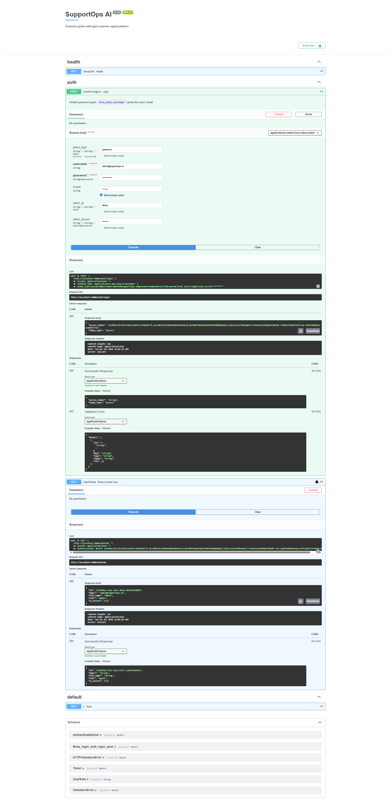
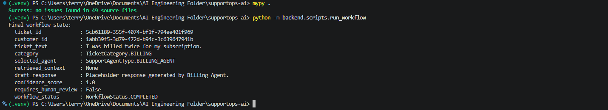
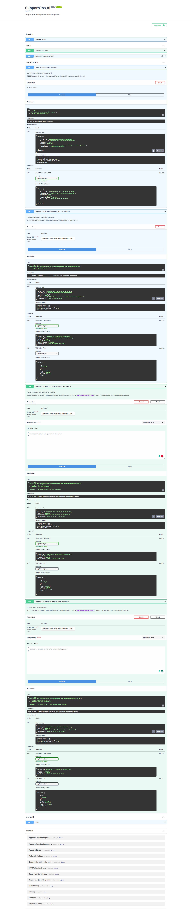

Case Study
SupportOps AI
A multi-agent customer support platform where AI agents triage and draft responses, but a deterministic policy engine — not the model — decides what's safe to send automatically.
1 · The Problem
Support triage is repetitive, but the risky 5% can't be automated blindly
Support teams field a high volume of billing, technical, and account questions that follow predictable patterns — good candidates for AI triage and drafting. But a fraction of tickets involve refunds, legal threats, security incidents, or fraud, where an autonomous AI response is the wrong failure mode entirely. The problem isn't "can an LLM answer support tickets" — it's building a system that knows the difference and routes accordingly, every time, with a record of why.
- Classifying and routing tickets to the right specialist consistently
- Keeping specialist answers grounded in real product knowledge, not invented
- Recognizing high-risk tickets (refund, legal, security, fraud) and holding them for a human
- Making retries and duplicate submissions safe instead of silently creating duplicate tickets
- Producing an audit trail for every automated and human decision
2 · Objectives
Real reasoning, deterministic guardrails
The system had to keep two things separate on purpose: what the AI is allowed to decide, and what a policy engine decides for it.
- Real specialist reasoning — CrewAI agents grounded in an actual knowledge base, not scripted replies
- Deterministic escalation — a policy engine, not the model, decides what needs human approval
- Idempotent intake — a retried request must never create a duplicate ticket
- Postgres as the system of record — Redis can fail without losing business data
- A full audit trail — every automated action and every human approve/edit/reject is logged
4
specialist agents: billing, technical, account, general
6
node LangGraph workflow, fixed topology
8
policy triggers routing tickets to human review
167
automated tests across unit + integration
3 · Solution
LangGraph owns control flow; CrewAI owns reasoning
LangGraph compiles a fixed six-node graph that owns ticket state, classification, routing, and escalation. CrewAI supplies the domain specialists it calls into — each grounded by a Postgres-backed knowledge tool — but a specialist never controls the workflow or decides its own escalation; it can only report that it's unresolved, and the policy engine decides what happens next.
Load Ticket
state init
Classify
OpenAI, cached
Select Agent
deterministic
Execute Agent
CrewAI + KB
Confidence Eval
policy engine
Persist
Postgres
The graph's topology has stayed fixed since it was first built — every node went from placeholder to a real implementation without changing the shape of the workflow.
4 · Technologies Used
Stack
5 · Challenges Solved
The distributed-systems edges, not the chatbot part
Two event loops, one shared client
FastAPI's request loop and a dedicated background loop bridging LangGraph's synchronous nodes each need their own Redis/Postgres client — sharing one across both used to crash with a RuntimeError, and for Postgres specifically could poison a pooled connection so a later, unrelated request would 500. Fixed by handing out one client/engine per calling event loop.
Choosing failure mode per feature, not uniformly
Caching and workflow checkpoints fail open — a miss just recomputes. Idempotency fails closed — POST /tickets returns 503 if Redis is unreachable, because silently proceeding could let a duplicate ticket through. Same infrastructure, deliberately different guarantees per feature.
Keeping agents grounded, not freelancing
Specialist agents answer only from a Postgres-backed knowledge-base tool (Redis-cached), not from open-ended model knowledge — so an answer can be traced back to a real reference article instead of the model's own guess.
Separating "AI reports" from "policy decides"
A CrewAI agent can report that it's unresolved, but it never decides escalation itself. That decision belongs entirely to policy/rules.py's deterministic keyword/threshold checks — an explicit design boundary between reasoning and control.
6 · Architecture
Postgres is the system of record; Redis is disposable
PostgreSQL holds every piece of business data — tickets, approval requests, audit logs, users. Redis only ever holds data that can safely expire or be rebuilt: rate-limit counters, idempotency claims, workflow checkpoints, and AI/knowledge-base caches. A Redis outage never puts business data at risk — the one exception is idempotency, which fails closed by design (see Section 5).

backend.scripts.export_workflow.7 · AI Workflow
Classification, reasoning, and escalation are three separate steps
classify_ticket
OpenAI structured output
execute_agent
CrewAI + KB tool
confidence_evaluation
policy/rules.py
Supervisor Queue
if flagged
Guardrail: escalation triggers on deterministic keyword/threshold rules (refund, legal, lawsuit, attorney, security, breach, fraud, low-confidence) plus a structured agent_unresolved signal the agent reports — never a decision the model makes for itself. Flagged tickets become a real ApprovalRequest row a Supervisor/Admin can view, edit, approve, or reject, each action writing its own audit log row.
8 · Testing
167 tests, real integration coverage included
159 unit tests run fully mocked (Redis via fakeredis, Postgres via test doubles) and finish fast with no external services. 8 integration tests exercise real Redis and/or Postgres — including the cross-event-loop regression from Section 5 — and skip themselves automatically if the service they need isn't reachable, so a plain pytest run is always safe.
| Area | What's verified |
|---|---|
| Graph nodes | classify, execute_agent, persist_results, checkpointing behavior |
| Policy engine | Escalation rules and adversarial-input handling |
| Supervisor API | Queue listing, approve/edit/reject, adversarial cases |
| Services | Idempotency store, audit logging, ticket creation + execution |
| Core infra | Rate limiting, caching, async utils, Redis client lifecycle |
| Integration | Real Redis+Postgres ticket workflow, cross-loop client isolation, live schema-vs-model drift |
9 · Results
What's verified vs. what's still open
167 / 167
automated tests passing
VERIFIED5
endpoints backed by real Postgres logic, not stubs
VERIFIED1
confidence score still a fixed placeholder, not model-derived
OPEN GAP0
tenants — single-tenant policy thresholds today
OPEN GAPThis is a portfolio build, not a live deployment — there's no production ticket volume to report. The open gaps above are called out on purpose; see Section 2 of the Technical Architecture doc for the full status table.
10 · Screenshots
Evidence, not mockups



11 · Key Takeaways
What this build was really practicing
Separating "the AI decides" from "policy decides" at a hard boundary is what makes autonomous agent behavior safe to ship.
Ephemeral infrastructure (Redis) and system-of-record data (Postgres) need explicitly different failure modes, chosen per feature.
Grounding agents in a real retrieval tool, not open-ended model knowledge, is what makes their answers auditable.
Multi-event-loop bugs are invisible until you specifically test the interaction — a smoke test alone wouldn't have caught the cross-loop connection poisoning.
An idempotent write path is a correctness requirement, not a nice-to-have, the moment retries are possible.
Naming a fixed-value placeholder honestly (_PLACEHOLDER_CONFIDENCE_SCORE) in the code and the docs beats quietly presenting it as calibrated.
Resources
Want to verify or explore this further? Here you go.
- GitHub repositoryFull source, commit history, 167 passing tests github.com/Terrytd0/Supportops-AI
- READMESetup, feature list, architecture overview README.md
- Demo videoLive walkthrough of the workflow end to end Watch on Google Drive
- ADR-001LangGraph vs. CrewAI, and why the project uses both docs/adr/ADR-001-langgraph-vs-crewai.md
- Technical ArchitectureThe companion document to this case study technical-architecture.pdf
- Full docs folderArchitecture, requirements, ADRs, design review docs/